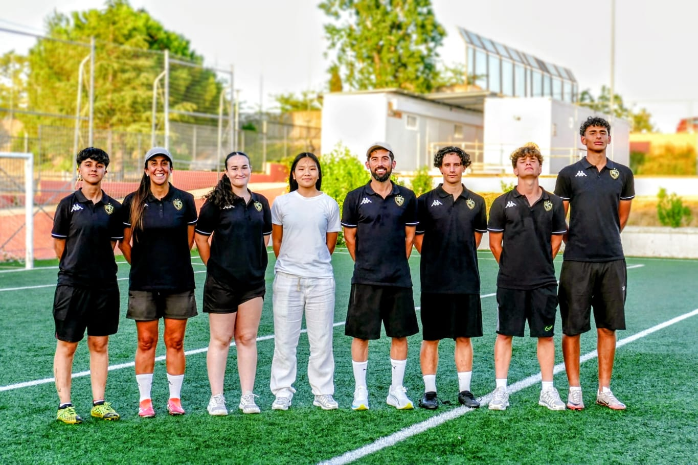

Staff Técnico
Nuestro equipo está formado por entrenadores y profesionales con formación internacional, décadas de experiencia y una pasión genuina por el desarrollo de jóvenes futbolistas.


Marc
Director de la AcademiaMarc es el director de la academia y el corazón de Base Élite 17. Se encarga de que todo funcione a la perfección: desde la supervisión de entrenamientos y torneos hasta la relación con las familias. Su liderazgo y cercanía garantizan que cada jugador viva una experiencia de primer nivel.

Verónica
EntrenadoraCon una trayectoria impresionante en el fútbol formativo, Verónica ha formado parte de algunas de las academias más prestigiosas del país, incluida la cantera del Real Madrid. Suma muchos años de experiencia formando a jóvenes futbolistas, aportando una metodología de primer nivel y una pasión contagiosa por el deporte.

Albert
Entrenador de PorterosPortero con muchos años de experiencia jugando a un nivel muy alto. Albert aporta un conocimiento profundo de la posición, combinando técnica depurada con la lectura del juego que solo da la experiencia competitiva. Con él, cada portero y portera desarrolla su verdadero potencial.

Alex
EntrenadorEntrenador en Canovelles con una pasión innata por el fútbol formativo. Alex combina su experiencia en el campo con una gran capacidad para conectar con los jóvenes jugadores, adaptando sus sesiones a las necesidades de cada uno. Su energía y dedicación lo hacen un pilar fundamental del equipo técnico.

Adam
EntrenadorCon algunos años de experiencia como entrenador de fútbol formativo, Adam es una persona super cercana a los chicos. Además, es jugador a buen nivel, lo que le permite transmitir desde la experiencia directa lo que sienten sus jugadores en cada entrenamiento y partido.